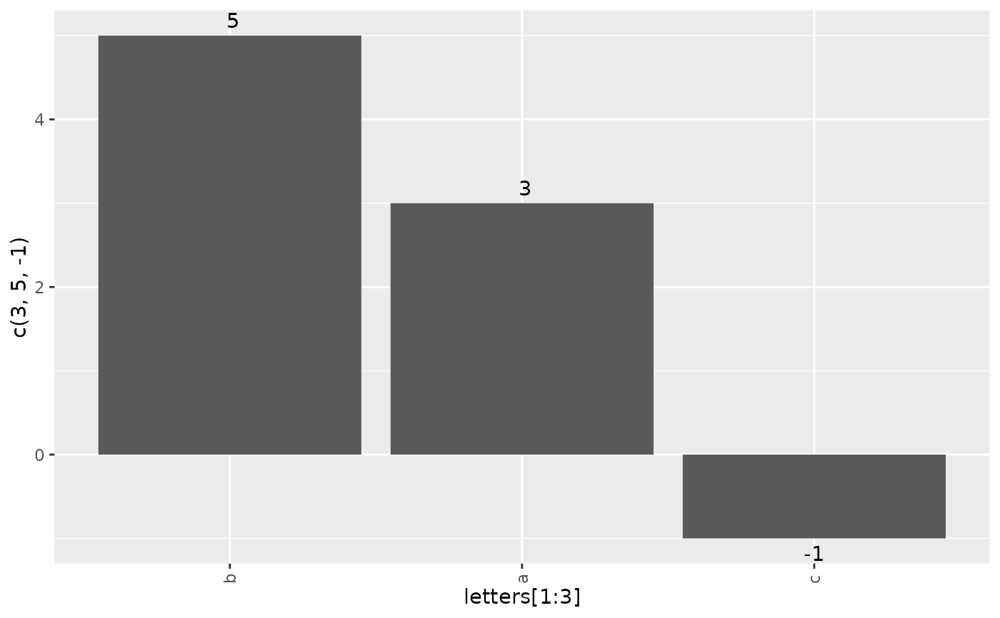
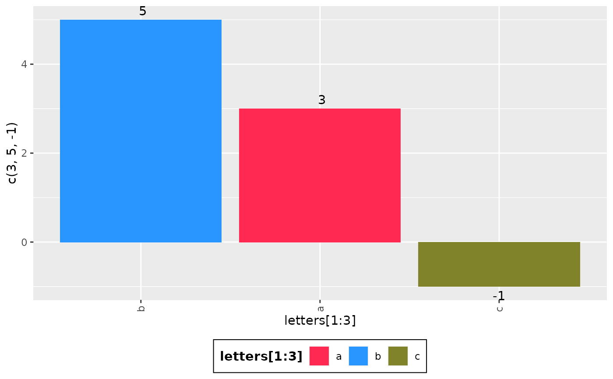
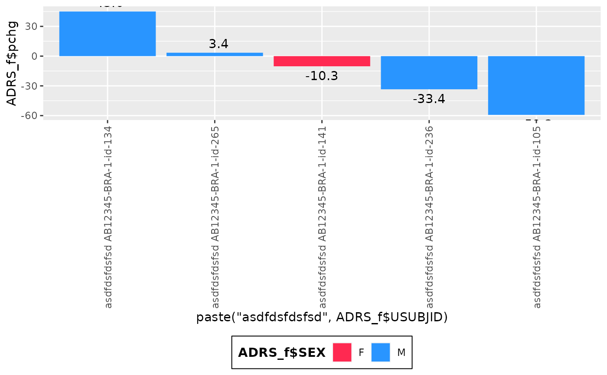
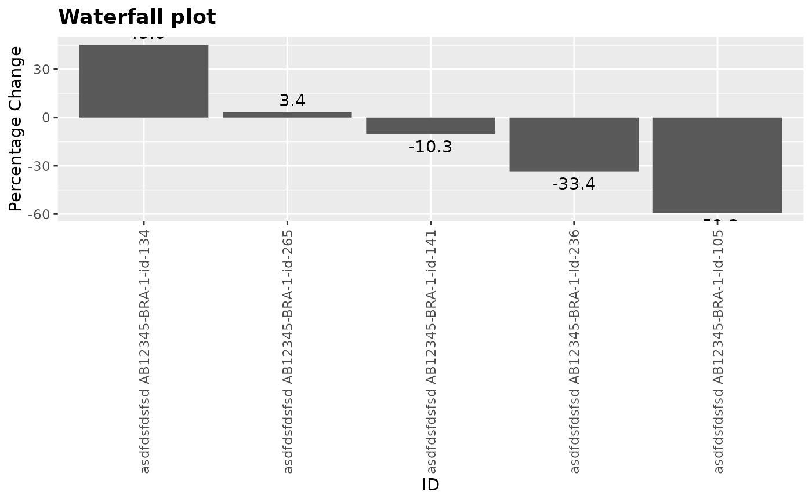
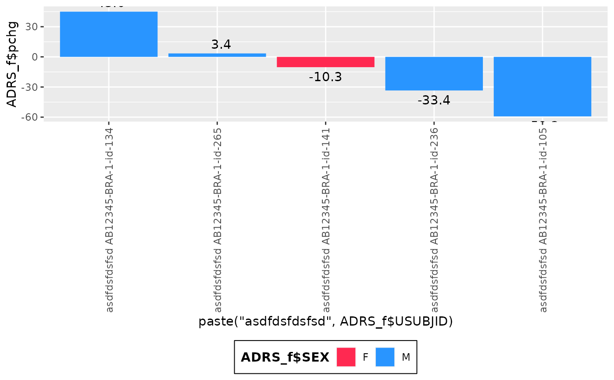
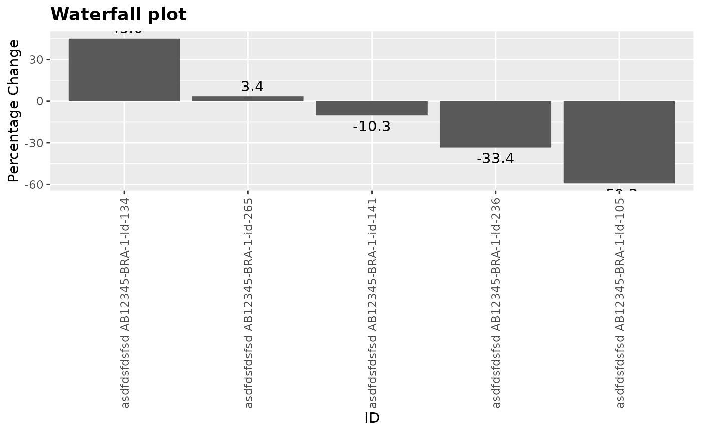

This basic waterfall plot visualizes a quantity height ordered by value with some
markup.
g_waterfall(
height,
id,
col = NULL,
xlab = NULL,
ylab = NULL,
col_legend_title = NULL,
title = NULL
)Arguments
- height
(
numericvector)
Contains values to be plotted as the waterfall bars- id
(vector)
Contains of IDs used as the x-axis label for the waterfall bars- col
(vector)
Categorical variable for bar coloring- xlab
(
charactervalue)
x label. Default isID.- ylab
(
charactervalue)
y label. Default isValue.- col_legend_title
(
charactervalue)
Text to be displayed as legend title.- title
(
charactervalue)
Text to be displayed as plot title.
Examples
g_waterfall(height = c(3, 5, -1), id = letters[1:3])

g_waterfall(
height = c(3, 5, -1),
id = letters[1:3],
col = letters[1:3]
)
#> Warning: Use of `plot_data_ord$col` is discouraged. Use `col` instead.
#> Warning: Use of `plot_data_ord$col` is discouraged. Use `col` instead.

library(scda)
library(dplyr)
ADSL <- synthetic_cdisc_data("latest")$adsl
ADSL_f <- ADSL %>%
select(USUBJID, STUDYID, ARM, ARMCD, SEX)
ADRS <- synthetic_cdisc_data("latest")$adrs
ADRS_f <- ADRS %>%
filter(PARAMCD == "OVRINV") %>%
mutate(pchg = rnorm(n(), 10, 50))
ADRS_f <- head(ADRS_f, 30)
ADRS_f <- ADRS_f[!duplicated(ADRS_f$USUBJID), ]
head(ADRS_f)
#> # A tibble: 5 × 50
#> STUDYID USUBJID SUBJID SITEID AGE SEX RACE COUNTRY DTHFL INVID INVNAM
#> <chr> <chr> <chr> <chr> <int> <fct> <fct> <fct> <fct> <chr> <chr>
#> 1 AB12345 AB12345-BR… id-105 BRA-1 38 M BLAC… BRA N INV … Dr. B…
#> 2 AB12345 AB12345-BR… id-134 BRA-1 47 M WHITE BRA N INV … Dr. B…
#> 3 AB12345 AB12345-BR… id-141 BRA-1 35 F WHITE BRA N INV … Dr. B…
#> 4 AB12345 AB12345-BR… id-236 BRA-1 32 M BLAC… BRA N INV … Dr. B…
#> 5 AB12345 AB12345-BR… id-265 BRA-1 25 M WHITE BRA N INV … Dr. B…
#> # … with 39 more variables: ARM <fct>, ARMCD <fct>, ACTARM <fct>,
#> # ACTARMCD <fct>, REGION1 <fct>, STRATA1 <fct>, STRATA2 <fct>, BMRKR1 <dbl>,
#> # BMRKR2 <fct>, ITTFL <fct>, SAFFL <fct>, BMEASIFL <fct>, BEP01FL <fct>,
#> # RANDDT <date>, TRTSDTM <dttm>, TRTEDTM <dttm>, EOSSTT <fct>, EOTSTT <fct>,
#> # EOSDT <date>, EOSDY <int>, DCSREAS <fct>, DTHDT <date>, DTHCAUS <fct>,
#> # DTHCAT <fct>, LDDTHELD <int>, LDDTHGR1 <fct>, LSTALVDT <date>,
#> # study_duration_secs <dbl>, ASEQ <int>, RSSEQ <int>, PARAM <fct>, …
g_waterfall(
height = ADRS_f$pchg,
id = ADRS_f$USUBJID,
col = ADRS_f$AVALC
)
#> Warning: Use of `plot_data_ord$col` is discouraged. Use `col` instead.
#> Warning: Use of `plot_data_ord$col` is discouraged. Use `col` instead.
 g_waterfall(
height = ADRS_f$pchg,
id = ADRS_f$USUBJID,
col = ADRS_f$AVALC
)
#> Warning: Use of `plot_data_ord$col` is discouraged. Use `col` instead.
#> Warning: Use of `plot_data_ord$col` is discouraged. Use `col` instead.
g_waterfall(
height = ADRS_f$pchg,
id = ADRS_f$USUBJID,
col = ADRS_f$AVALC
)
#> Warning: Use of `plot_data_ord$col` is discouraged. Use `col` instead.
#> Warning: Use of `plot_data_ord$col` is discouraged. Use `col` instead.
 g_waterfall(
height = ADRS_f$pchg,
id = paste("asdfdsfdsfsd", ADRS_f$USUBJID),
col = ADRS_f$SEX
)
#> Warning: Use of `plot_data_ord$col` is discouraged. Use `col` instead.
#> Warning: Use of `plot_data_ord$col` is discouraged. Use `col` instead.

g_waterfall(
height = ADRS_f$pchg,
id = paste("asdfdsfdsfsd", ADRS_f$USUBJID),
xlab = "ID",
ylab = "Percentage Change",
title = "Waterfall plot"
)

g_waterfall(
height = ADRS_f$pchg,
id = paste("asdfdsfdsfsd", ADRS_f$USUBJID),
col = ADRS_f$SEX
)
#> Warning: Use of `plot_data_ord$col` is discouraged. Use `col` instead.
#> Warning: Use of `plot_data_ord$col` is discouraged. Use `col` instead.

g_waterfall(
height = ADRS_f$pchg,
id = paste("asdfdsfdsfsd", ADRS_f$USUBJID),
xlab = "ID",
ylab = "Percentage Change",
title = "Waterfall plot"
)
